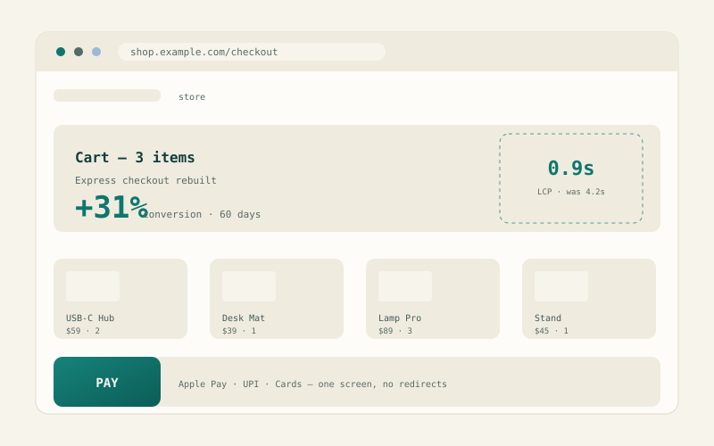

The checkout rebuild — +31% in 60 days.
A D2C brand was losing a third of its buyers in a five-step checkout. We rebuilt it in three steps — and made it faster than the page above it.
Cart abandonment at 71%, and everyone had a theory.
The analytics said buyers dropped between step two and step three — but not why. Session recordings showed the shape of it: a login wall mid-checkout, a shipping estimator that reloaded the page, and a payment step that redirected twice. On 4G, the checkout alone took eleven seconds to complete. The team had opinions; the data had facts. We needed both to agree.
We assumed customers wanted more payment options. It turned out they wanted fewer decisions. — Founder, D2C retail brand
A two-week audit confirmed three killers: the mandatory account wall (31% of drops), full page reloads between steps (cumulative 4.2s LCP on mobile), and an error recovery flow that restarted the whole checkout on any validation failure. Everything else was fixable polish.
Four decisions that made the difference.
One screen. Zero redirects. Boring on purpose.

Under the hood: a pre-rendered Next.js shell on Oracle's Always-Free ARM tier, Stripe Elements for payments (PCI scope stays off the client), Postgres for orders, and a queue that survives payment-provider hiccups without double-charging. The client's monthly infra bill went from $180 to $0 during the migration window — the site you're reading runs the same stack.
The numbers held at 90 days.
Conversion settled at +31% versus the trailing quarter and stayed there through the festive sale — the first sale the store didn't drop a payment. Support tickets tagged "checkout" fell 62%. The founder's favorite metric is the quietest one: zero checkout-related incidents in four months.
What I'd do differently: I'd instrument the old checkout earlier and more aggressively — we lost a week to arguments that two days of event analytics would have settled. Also, I'd have shipped the guest-checkout change alone in week one; it carried half the lift and deserved its own moment.
He treated our checkout like his own revenue line. Conversion jumped within two months — and he showed us the data first.